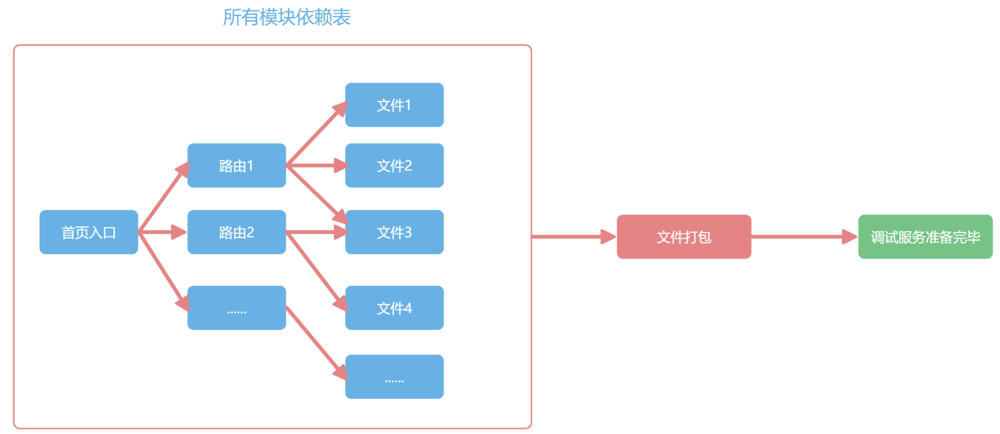
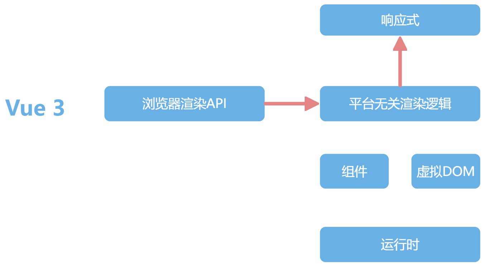

Vue3新特性
Vue2的核心模块和历史遗留问题
从下图可以看到，Vue2是一个响应式驱动的、内置虚拟DOM、组件化、用在浏览器开发，并且有一个运行时把这些模块很好地管理起来的框架。
Vue 2 能把上面所说的这些模块很好地管理起来，看起来已经足够好了。不过事实真的如此么？Vue 2 还是有缺陷的，所以后面才会升级迭代。
下面列举了一些 Vue 2 常见的缺陷，可以对照你的实际开发经验，看看是否也遇到过这些问题：
首先从开发维护的角度看，Vue 2 是使用 Flow.js 来做类型校验。但现在 Flow.js 已经停止维护了，整个社区都在全面使用 TypeScript 来构建基础库，Vue 团队也不例外。
然后从社区的二次开发难度来说，Vue 2 内部运行时，是直接执行浏览器 API 的。但这样就会在 Vue 2 的跨端方案中带来问题，要么直接进入 Vue 源码中，和 Vue 一起维护，比如 Vue 2 中你就能见到 Weex 的文件夹。要么是要直接改为复制一份全部 Vue 的代码，把浏览器 API 换成客户端或者小程序的。比如 mpvue 就是这么做的，但是 Vue 后续的更新就很难享受到。
最后从我们普通开发者的角度来说，Vue 2 响应式并不是真正意义上的代理，而是基于 Object.defineProperty() 实现的，这个 API 并不是代理，而是对某个属性进行拦截，所以有很多缺陷，比如：删除数据就无法监听，需要 $delete 等 API 辅助才能监听到。
并且，Option API 在组织代码较多组件的时候不易维护。对于 Option API 来说，所有的 methods、computed 都在一个对象里配置，这对小应用来说还好。但代码超过 300 行的时候，新增或者修改一个功能，就需要不停地在 data，methods 里跳转写代码，我称之为上下反复横跳。
从七个方面了解Vue3新特性
前面这些问题并不是 Vue 2 有意为之，大部分是发展的过程中碰见的。Vue 3 就是继承了 Vue 2 具有的响应式、虚拟 DOM，组件化等所有优秀的特点，并且全部重新设计，解决了这些历史包袱的新框架，是一个拥抱未来的前端框架。接下来我们就来具体看看 Vue 3 新特性，其中，响应式系统、Composition API 组合语法、新的组件和 Vite 是你需要重视的；自定义渲染器这方面的知识，你想用 Vue 开发跨端应用时会用到；如果你想对 Vue 源码作出贡献，RFC 机制你也需要好好研究，并且得对 TypeScript 重构有很好的经验。
响应式系统
Vue 2 的响应式机制是基于 Object.defineProperty() 这个 API 实现的，此外，Vue 还使用了 Proxy，这两者看起来都像是对数据的读写进行拦截，但是 defineProperty 是拦截具体某个属性，Proxy 才是真正的“代理”。怎么理解这两者的区别呢？我们首先看 defineProperty 这个 API，defineProperty 的使用，要明确地写在代码里，下面是示例代码：
1 | Object.defineProperty(obj, 'title', { |
当项目里“读取 obj.title”和“修改 obj.title”的时候被 defineProperty 拦截，但 defineProperty 对不存在的属性无法拦截，所以 Vue 2 中所有数据必须要在 data 里声明。而且，如果 title 是一个数组的时候，对数组的操作，并不会改变 obj.title 的指向，虽然我们可以通过拦截.push 等操作实现部分功能，但是对数组的长度的修改等操作还是无法实现拦截，所以还需要额外的 $set 等 API。而 Proxy 这个 API 就是真正的代理了，我们先看它的用法：
1 | new Proxy(obj, { |
需要注意的是，虽然 Proxy 拦截 obj 这个数据，但 obj 具体是什么属性，Proxy 则不关心，统一都拦截了。而且 Proxy 还可以监听更多的数据格式，比如 Set、Map，这是 Vue 2 做不到的。当然，Proxy 存在一些兼容性问题，这也是为什么 Vue 3 不兼容 IE11 以下的浏览器的原因，还好现在 IE 用的人不多了。更重要的是，我觉得 Proxy 代表一种方向，就是框架会越来越多的拥抱浏览器的新特性。在 Proxy 普及之前，我们是没有办法完整的监听一个 JavaScript 对象的变化，只能使用 Object.defineProperty() 去实现一部分功能。前端框架利用浏览器的新特性来完善自己，才会让前端这个生态更繁荣，抛弃旧的浏览器是早晚的事。
Composition API组合语法
先举个 Vue 2 中的简单例子，一个累加器，并且还有一个计算属性显示累加器乘以 2 的结果。
1 | <div id="app"> |
在 Vue 3 中，采用下方的写法，新增一个 setup 配置：
1 | <div id="app"> |
使用 Composition API 后，代码看起来很烦琐，没有 Vue 2 中 Options API 的写法简单好懂，但 Options API 的写法也有几个很严重的问题：
由于所有数据都挂载在 this 之上，因而 Options API 的写法对 TypeScript 的类型推导很不友好，并且这样也不好做 Tree-shaking 清理代码。新增功能基本都得修改 data、method 等配置，并且代码上 300 行之后，会经常上下反复横跳，开发很痛苦。代码不好复用，Vue 2 的组件很难抽离通用逻辑，只能使用 mixin，还会带来命名冲突的问题。我们使用 Composition API 后，虽然看起来烦琐了一些，但是带来了诸多好处：所有 API 都是 import 引入的（现在我们的例子还没有工程化，后续会加入）。用到的功能都 import 进来，对 Tree-shaking 很友好，没用到功能，打包的时候会被清理掉 ，减小包的大小。不再上下反复横跳，我们可以把一个功能模块的 methods、data 都放在一起书写，维护更轻松。代码方便复用，可以把一个功能所有的 methods、data 封装在一个独立的函数里，复用代码非常容易。Composotion API 新增的 return 等语句，在实际项目中使用 <script setup>特性可以清除。
Composition API 对我们开发 Vue 项目起到了巨大的帮助。下面这个示例图很好地说明了问题：每一个功能模块的代码颜色一样，左边是 Options API，一个功能的代码零散的分布在 data，methods 等配置内，维护起来很麻烦，而右边的 Compositon API 就不一样了，每个功能模块都在一起维护。
其实还可以更进一步，如果每个颜色块代码，我们都拆分出去一个函数，我们就会写出类似上面右侧风格的代码，每个数据来源都清晰可见，而且每个功能函数都可以在各个地方复用。
新的组件
Vue 3 内置了 Fragment、Teleport 和 Suspense 三个新组件。
- Fragment: Vue 3 组件不再要求有一个唯一的根节点，清除了很多无用的占位 div。
- Teleport: 允许组件渲染在别的元素内，主要开发弹窗组件的时候特别有用。
- Suspense: 异步组件，更方便开发有异步请求的组件。
新一代工程化工具Vite
Vite 不在 Vue 3 的代码包内，和 Vue 也不是强绑定，Vite 的竞品是 Webpack，而且按照现在的趋势看，使用率超过 Webpack 也是早晚的事。
Vite 主要提升的是开发的体验，Webpack 等工程化工具的原理，就是根据你的 import 依赖逻辑，形成一个依赖图，然后调用对应的处理工具，把整个项目打包后，放在内存里再启动调试。
由于要预打包，所以复杂项目的开发，启动调试环境需要 3 分钟都很常见，Vite 就是为了解决这个时间资源的消耗问题出现的。现代浏览器已经默认支持了 ES6 的 import 语法，Vite 就是基于这个原理来实现的。具体来说，在调试环境下，我们不需要全部预打包，只是把你首页依赖的文件，依次通过网络请求去获取，整个开发体验得到巨大提升，做到了复杂项目的秒级调试和热更新。
下图展示了 Webpack 的工作原理，Webpack 要把所有路由的依赖打包后，才能开始调试

下图所示的是 Vite 的工作原理，一开始就可以准备联调，然后根据首页的依赖模块，再去按需加载，这样启动调试所需要的资源会大大减少。
自定义渲染器
Vue 2 内部所有的模块都是揉在一起的，这样做会导致不好扩展的问题，刚才我也提到了这一点。Vue 3 是怎么解决这个问题的呢？那就是拆包，使用最近流行的 monorepo 管理方式，响应式、编译和运行时全部独立了，变成下图所示的模样

可以看到，在 Vue 3 的组织架构中，响应式独立了出来。而 Vue 2 的响应式只服务于 Vue，Vue 3 的响应式就和 Vue 解耦了，你甚至可以在 Node.js 和 React 中使用响应式。
渲染的逻辑也拆成了平台无关渲染逻辑和浏览器渲染 API 两部分 。
在这个架构下，Node 的一些库，甚至 React 都可以依赖响应式。
在任何时候，如果你希望数据被修改了之后能通知你，你都可以单独依赖 Vue 3 的响应式。那么，在你想使用 Vue 3 开发小程序、开发 canvas 小游戏以及开发客户端的时候，就不用全部 fork Vue 的代码，只需要实现平台的渲染逻辑就可以
就像动画片《战神金刚》，五个机器人可以独立执行任务，但关键时刻，高呼一声“我来组成头部”，就可以合体，从而发挥整体的作用。Vue 3 也是一样，响应式、编译和运行时几部分组合在一起就是运行在浏览器端的 Vue 3，每个模块又都可以独立扩展出新的功能。
全部模块使用TypeScript重构
JavaScript 是弱类型的语言。，类型系统带来了更方便的提示，并且让我们的代码能够更健壮。我们还是结合例子来看看，在下面这段代码中，我们首先定义了 name 这个变量，在定义的时候标记的是一个字符串，因而后面给它赋值时，赋值为数字就会报错。之后，我们定义一个类型 Person，里面的变量 name 是字符串类型，变量 age 是数字类型。违反这个设置的数据就报错，这在多人协同和长期维护的项目里带来的收益是巨大的，因为这样可以使错误的代码在编译阶段就被发现，从而避免程序上线运行后，可能会发生的更大的异常错误。
1 | let name:string = '我是个靓仔' |
所以大部分开源的框架都会引入类型系统，来对 JavaScript 进行限制。这样做的原因，就是我们前面提到的两点：第一点是，类型系统带来了更方便的提示；第二点是，类型系统让代码更健壮。Vue 2 那个时代基本只有两个技术选型，Facebook 家的 Flow.js 和微软家的 TypeScript。Vue 2 选 Flow.js 没问题，但是现在 Flow.js 被抛弃了。Vue 3 选择了 TypeScript，TypeScript 官方也对使用 TypeScript 开发 Vue 3 项目的团队也更加友好
RFC机制
Vue 3 的第一个新特性和代码无关，而是 Vue 团队开发的工作方式。
关于 Vue 的新语法或者新功能的讨论，都会先在 GitHub 上公开征求意见，邀请社区所有的人一起讨论， 你随时可以打开这个项目https://github.com/vuejs/rfcs。Vue 3 正在讨论中的新需求，任何人都可以围观、参与讨论和尝试实现。这个改变让 Vue 社区更加有活力。
总结
我们再来对Vue 3 主要的新特性做一个回顾：
- 新的 RFC 机制也让我们所有人都可以参与 Vue 新语法的讨论。
- 工程化工具 Vite 带来了更丝滑的调试体验。对于产品的最终效果来看，Vue 3 性能更高，体积更小。
- 对于普通开发者来说，Composition API 组合语法带来了更好的组织代码的形式。全新的响应式系统基于 Proxy，也可以独立使用。Vue 3 内置了新的 Fragment、Teleport 和 Suspense 等组件。
- 对于 Vue 的二次开发来说，自定义渲染器让我们开发跨端应用时更加得心应手。
- 对于 Vue 的源码维护者，全部的模块使用 TypeScript 重构，能够带来更好的可维护性。
简而言之，Vue 3 带给我们的就是更快、更强且更易于扩展的开发体验，我们也可以用下面这个图来做个总结：